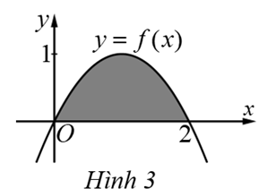
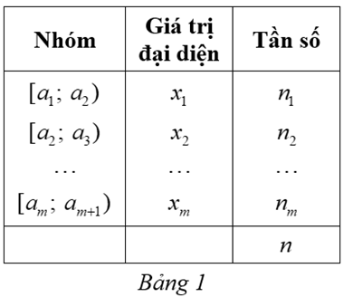
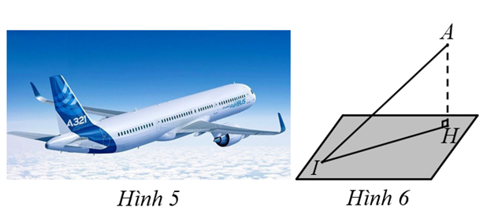
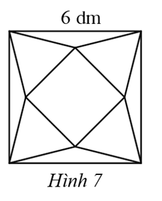

Câu 1. Cho hàm số \( y = f(x) \) có đồ thị như Hình 1.
Tọa độ tâm đối xứng của đồ thị hàm số đã cho là:
Câu 2. Cho hàm số \( y = \frac{a x^2 + b x + c}{m x + n}, (a m \neq 0) \) có đồ thị như Hình 2.
Phương trình đường tiệm cận xiên của đồ thị hàm số đã cho là:
Câu 3. Hàm số nào sau đây là một nguyên hàm của hàm số \( f(x) = 15^x \)?
Câu 4. Trong không gian tọa độ \( Oxyz \), phương trình nào sau đây là phương trình tổng quát của mặt phẳng?
Câu 5. Trong không gian tọa độ \( Oxyz \), vector nào sau đây là vector chỉ phương của đường thẳng \( \Delta: \left\{\begin{array}{l} x = -4 + 2t \\ y = 7 - 3t \\ z = 8 - 9t \end{array}\right. \)?
Câu 6. Trong không gian tọa độ \( Oxyz \), cho mặt cầu \( (S): (x + 3)^2 + (y - 9)^2 + (z + 12)^2 = 5^2 \). Bán kính của mặt cầu \( (S) \) là:
Câu 7. Nếu hàm số \( y = f(x) \) liên tục trên \( \mathbb{R} \) thỏa mãn \( f(x) < f(2), \forall x \in (1 ; 3) \setminus \{2\} \) thì:
Câu 8. Tích vô hướng của hai vector \( \vec{a}, \vec{b} \) trong không gian được tính bằng:
Câu 9. Cho hàm số \( y = f(x) \) có đồ thị như Hình 3. Gọi \( H \) là phần diện tích hình phẳng được tô màu. Thể tích \( V \) của khối tròn xoay tạo thành khi cho hình phẳng \( H \) quay quanh trục \( Ox \) là:
Câu 10. Xét mẫu số liệu ghép nhóm cho bởi Bảng 1. Gọi \( \bar{x} \) là số trung bình cộng của mẫu số liệu ghép nhóm. Phương sai của mẫu số liệu ghép nhóm đó được tính bằng công thức nào dưới đây?
Câu 11. Trong không gian tọa độ \( Oxyz \), mặt cầu \( (S) \) có tâm \( I(2 ; 1 ; -1) \) và đường kính 6 có phương trình là:
Câu 12. Cho hàm số \( y = f(x) \) liên tục trên \( \mathbb{R} \) thỏa mãn \( \int_0^2 f(x) \, dx = 4, \int_1^2 f(x) \, dx = 3 \). Giá trị của biểu thức \( \int_0^1 f(x) \, dx \) bằng:
Câu 13. Trong không gian tọa độ \( Oxyz \), cho hai mặt phẳng \( (P_1): 2x + y + 2z - 1 = 0 \) và \( (P_2): x - 2y - 2z - 7 = 0 \).
Câu 14. Cho hàm số \( y = \frac{2x - 1}{x - 1} \).
Câu 15. Một chiếc xe đang chạy với vận tốc \( 20 \, \mathrm{m/s} \). Người lái xe đạp phanh làm xe chuyển động chậm dần đều với gia tốc \( a = -5 \, \mathrm{m/s^2} \).
Câu 16. Năm 2001, Cộng đồng Châu Âu có làm một đợt kiểm tra rất rộng rãi các con bò để phát hiện những con bị bệnh bò điên. Người ta tiến hành một loại xét nghiệm và cho kết quả như sau: Khi con bò bị bệnh bò điên thì xác suất để ra phản ứng dương tính trong xét nghiệm là \( 70\% \); còn khi con bò không bị bệnh thì xác suất để xảy ra phản ứng dương tính trong xét nghiệm đó là \( 10\% \). Biết rằng tỉ lệ bò bị mắc bệnh bò điên ở Hà Lan là 1,3 con trên 100000 con. Gọi \( X \) là biến cố một con bò bị bệnh bò điên, \( Y \) là biến cố một con bò phản ứng dương tính với xét nghiệm.
Câu 17. Giả sử \( \int (0.1)^x \, dx = -\frac{1}{\ln a} b^x + C \). Với \( a, b \) là các hằng số dương. Giá trị của biểu thức \( \frac{a}{b} \) bằng bao nhiêu?
Câu 18. Một máy bay cất cánh với gia tốc không đổi, vận tốc sau 3 giây đạt 240 km/h. Hình 6 mô tả mặt đất là mặt phẳng, máy bay bay từ vị trí \( I \) đến vị trí \( A \). Độ cao \( AH \) của máy bay so với mặt đất sau khi máy bay rời khỏi mặt đất 3 giây là bao nhiêu mét (làm tròn kết quả đến hàng đơn vị)?
Câu 19. Một doanh nghiệp hỗ trợ cho bốn người dân bị thất nghiệp ở một khu phố là 5 triệu đồng/người với điều kiện như sau: Người thất nghiệp của khu phố làm việc tạp vụ cho doanh nghiệp trong nhiều ngày liên tiếp. Sau ngày đầu tiên, doanh nghiệp trả 110 nghìn đồng/người. Bắt đầu từ ngày thứ hai, mỗi ngày tăng thêm 20 nghìn đồng/người so với ngày hôm trước. Mỗi người thất nghiệp phải làm cho doanh nghiệp đó ít nhất bao nhiêu ngày để có được hơn 5 triệu đồng (làm tròn kết quả đến hàng đơn vị)?
Câu 20. Bác Hà lập lại mật khẩu cho tài khoản thanh toán trực tuyến. Khi lập mật khẩu, hệ thống báo về số điện thoại của bác mã OTP là một dãy 4 ký tự, mỗi ký tự là một chữ số, chữ số 0 có thể đứng đầu. Xác suất của biến cố: Mã OTP là dãy ký tự \( abcd \) với \( a < b < c < d \) là bao nhiêu (làm tròn kết quả đến hàng phần trăm)?
Câu 21. Một xí nghiệp mỗi ngày sản xuất ra 2000 sản phẩm trong đó có 39 sản phẩm lỗi. Lần lượt lấy ra ngẫu nhiên hai sản phẩm không hoàn lại để kiểm tra. Tính xác suất của biến cố: Sản phẩm lấy ra lần thứ hai bị lỗi (làm tròn kết quả đến hàng phần trăm)?
Câu 22. Từ một tấm bìa mỏng hình vuông cạnh \( 6 \, \mathrm{dm} \), bạn Hoa cắt bỏ bốn tam giác cân bằng nhau có cạnh đáy là cạnh của hình vuông ban đầu và đỉnh là đỉnh của một hình vuông nhỏ phía trong rồi gập lên, ghép lại tạo thành một khối chóp tứ giác đều (Hình 7). Thể tích của khối chóp có giá trị lớn nhất bằng bao nhiêu decimet khối (làm tròn kết quả đến hàng phần trăm)?
Nhập họ và tên: